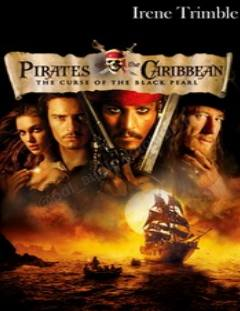

TCQaroqchilar, sirli medalion va dengiz sarguzashtlari haqidagi qiziqarli hikoya.
Yosh Elizabeth Swann va Will Turner dengiz qaroqchilari dunyosiga aloqador sirli oltin medalion tufayli bir-birlari bilan bog'lanib qolishadi. Kapitan Jek Chittak esa o'zining eski kemasini yangisiga almashtirish va qora marvarid kemasi bilan bog'liq afsonalarni ochish uchun Port Royalga keladi. Bu hikoya sarguzashtlar, qaroqchilar va dengizdagi g'ayritabiiy hodisalar haqida.